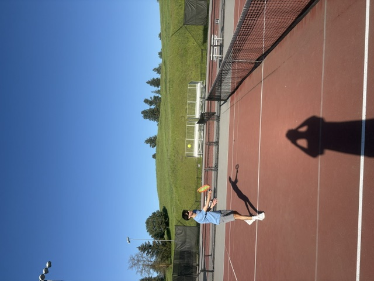

One of the most common strategies coming out of the serve is the serve and volley. It is pretty simple, you just rush towards the net after serving to try and finish the point as fast as possible. It is good for when your opponent likes to hit short or slow balls on the return. If they like to lob, it may not be nearly as effective and could just tire you out from running up and down the court so much. Use it wisely!

Example of the kind of volley you may see
The serve and volley is a very powerful tool. It can be great for chaning the pace of the game and getting quick points, but it is important to not overuse it.
A common mistake is simply rushing towards the net and ignoring where the opponent looks like they will hit the ball. It is important to cover where they look like they will be sending the ball so that it doesn't fly past you on your way to the net.